時系列解析
モデルの推定と予測
(Press ? for help, n and p for next and previous slide)
講義の内容
- 第1回 : 時系列の基本モデル
- 第2回 : モデルの推定と予測
時系列解析の復習
時系列解析とは
- 時系列データ
- 時間軸に沿って観測されたデータ
- 観測の順序に意味がある
- 異なる時点間での観測データの従属関係が重要
- 独立性にもとづく解析は行えない
- そのままでは大数の法則や中心極限定理は使えない
- 時系列解析の目的
- 時系列データの特徴を効果的に記述すること
- 時系列モデルの推定と評価
時系列モデルと定常性
確率過程
時間を添え字として持つ確率変数列
\begin{equation} X_{t},\;t=1,\dotsc,T \end{equation}- 弱定常過程 : 以下の性質をもつ確率過程 \(X_t\)
- \(X_{t}\)の平均は時点\(t\)によらない
- \(X_{t}\)と\(X_{t+h}\)の共分散は時点\(t\)によらず時差\(h\)のみで定まる
- 特に\(X_{t}\)の分散は時点\(t\)によらない (\(h=0\)の場合)
- 多くの場合，弱定常性を考えれば十分なので 単に 定常 ということが多い
- 定常でない確率過程は 非定常 であるという
ホワイトノイズ
定義
平均\(0\)，分散\(\sigma^{2}\) である確率変数の 確率分布\(P\)からの 独立かつ同分布な確率変数列
\begin{equation} X_{t} = \epsilon_{t}, \quad \epsilon_{t} \overset{i.i.d.}{\sim} P \end{equation}- 記号 \(\mathrm{WN}(0,\sigma^{2})\) で表記
- 定常 な確率過程
トレンドのあるホワイトノイズ
定義
\(\mu,\alpha\) を定数として
\begin{equation} X_{t}=\mu+\alpha t+\epsilon_{t}, \quad \epsilon_{t} \sim \mathrm{WN}(0,\sigma^2) \end{equation}で定義される確率過程
- 非定常 な確率過程
- トレンド項(平均値の変化)は現象に応じて一般化される
ランダムウォーク
定義
\(X_0\) を定数もしくは確率変数として
\begin{equation} X_{t}=X_{t-1}+\epsilon_{t}, \quad \epsilon_{t} \sim \mathrm{WN}(0,\sigma^2) \end{equation}で帰納的に定義される確率過程
- 分散が時間とともに増加・記憶のあるモデル
- 非定常 な確率過程
自己回帰過程
定義 (次数\(p\)のARモデル)
\(a_1,\dotsc,a_p\)を定数とし， \(X_1,\dotsc,X_p\)が初期値として与えられたとき，
\begin{equation} X_{t}=a_1X_{t-1}+\cdots+a_pX_{t-p}+\epsilon_{t}, \quad \epsilon_{t} \sim \mathrm{WN}(0,\sigma^2) \end{equation}で帰納的に定義される確率過程
- ランダムウォークの一般化
- 無限長の記憶のある(忘却しながら記憶する)モデル
- 定常にも非定常にもなる
移動平均過程
定義 (次数\(q\) のMAモデル)
\(b_1,\dotsc,b_q\)を定数とし， \(X_1,\dotsc,X_q\)が初期値として与えられたとき
\begin{equation} X_{t} = b_1\epsilon_{t-1}+\cdots+b_q\epsilon_{t-q}+\epsilon_{t}, \quad \epsilon_{t} \sim \mathrm{WN}(0,\sigma^2) \end{equation}で定義される確率過程
- 有限長の記憶のあるモデル
- 定常 な確率過程
自己回帰移動平均過程
定義 (次数\((p,q)\)のARMAモデル)
\(a_1,\dotsc,a_p,b_1,\dotsc,b_q\) を定数とし， \(X_1,\dotsc,X_{\max\{p,q\}}\) が初期値として与えられたとき
\begin{align} X_{t} &= a_1X_{t-1}+\cdots+a_pX_{t-p}\\ &\quad+ b_1\epsilon_{t-1}+\cdots+b_q\epsilon_{t-q} +\epsilon_{t},\\ &\quad \epsilon_{t} \sim \mathrm{WN}(0,\sigma^2) \end{align}で帰納的に定まる確率過程
- AR・MAモデルの一般化・基本的な時系列モデル
- 定常にも非定常にもなる
自己共分散・自己相関
- 弱定常な確率過程 : \(X_{t},\;t=1,\dotsc,T\)
\(X_{t}\) と \(X_{t+h}\) の共分散は時点\(t\)によらずラグ\(h\)のみで定まる
自己共分散 (定常過程の性質よりラグは\(h\ge0\)を考えればよい)
\begin{equation} \gamma(h) = \mathrm{Cov}(X_{t},X_{t+h}) \end{equation}\(X_{t}\) と \(X_{t+h}\) の相関も\(t\)によらずラグ\(h\)のみで定まる
自己相関
\begin{equation} \rho(h) =\gamma(h)/\gamma(0) = \mathrm{Cov}(X_{t},X_{t+h})/\mathrm{Var}(X_{t}) \end{equation}
- 異なる時点間での観測データの従属関係を要約するための最も基本的な統計量
標本自己共分散・標本自己相関
- 観測データ \(X_1,\dotsc,X_{T}\) からの推定
ラグ\(h\)の自己共分散の推定 : 標本自己共分散
\begin{equation} \hat\gamma(h) = \frac{1}{T}\sum_{t=1}^{T-h}(X_{t}-\bar{X})(X_{t+h}-\bar{X}) \end{equation}\(\bar{X}=\frac{1}{T}\sum_{t=1}^TX_{t}\) は標本平均
ラグ\(h\)での自己相関の推定 : 標本自己相関
\begin{equation} \hat\gamma(h)/\hat\gamma(0) = \frac{\sum_{t=1}^{T-h}(X_{t}-\bar{X})(X_{t+h}-\bar{X})}{\sum_{t=1}^T(X_{t}-\bar{X})^2} \end{equation}
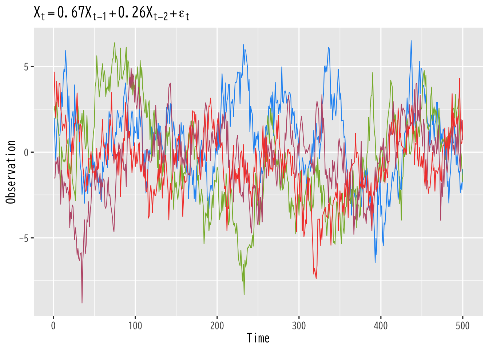
Figure 1: 同じモデルに従うAR過程の例
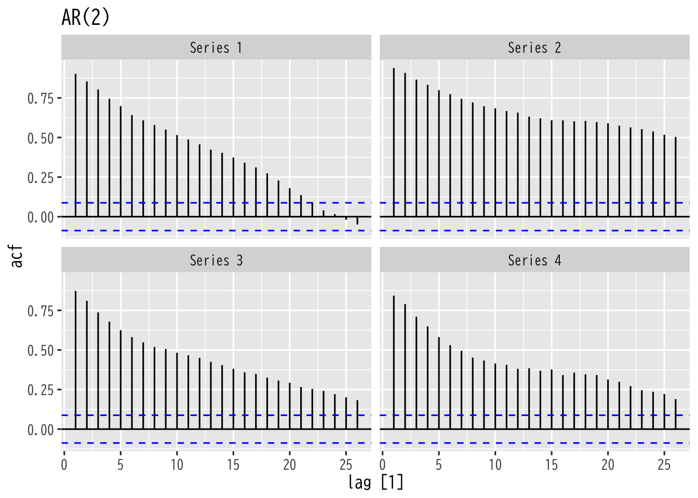
Figure 2: AR過程の自己相関

Figure 3: 同じモデルに従うMA過程の例
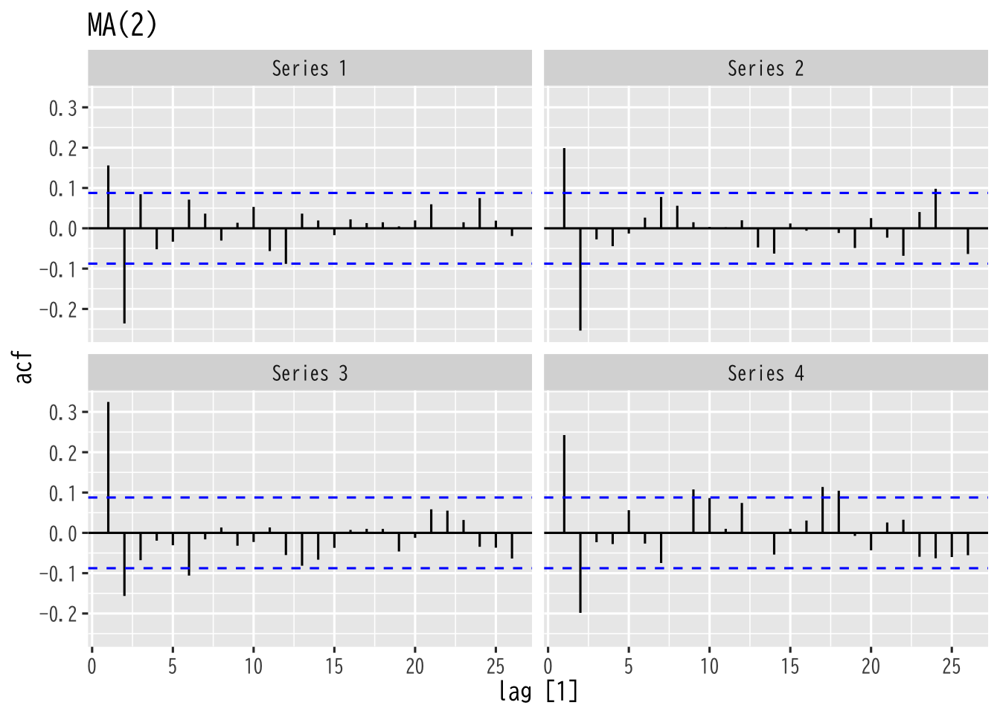
Figure 4: MA過程の自己相関
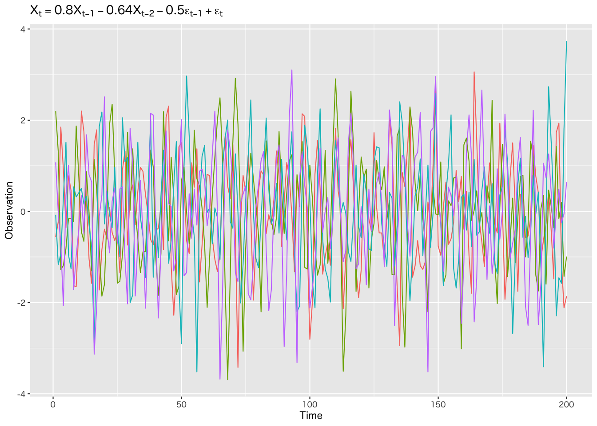
Figure 5: 同じモデルに従うARMA過程の例
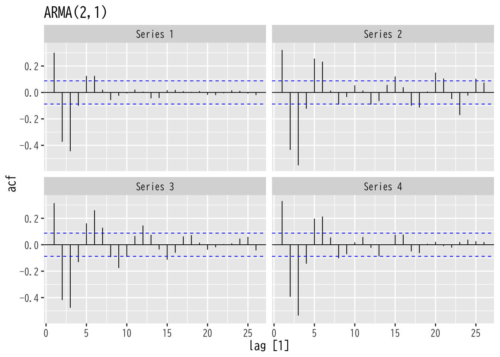
Figure 6: ARMA過程の自己相関
ARモデルの推定
自己共分散・自己相関
- 平均\(0\)の弱定常な確率過程 : \(X_{t},\;t=1,\dotsc,T\)
\(X_{t}\) と \(X_{t+h}\) の共分散は時点\(t\)によらずラグ\(h\)のみで定まる
自己共分散
\begin{equation} \gamma(h) = \mathrm{Cov}(X_{t},X_{t+h}) = \mathbb{E}[X_{t}X_{t+h}] \end{equation}\(X_{t}\)と\(X_{t+h}\)の相関も\(t\)によらずラグ\(h\)のみで定まる
自己相関係数
\begin{equation} \rho(h) =\mathrm{Cov}(X_{t},X_{t+h})/\mathrm{Var}(X_{t}) =\gamma(h)/\gamma(0) \end{equation}
自己共分散とARモデル
AR(p)モデル :
\begin{equation} X_{t} = a_{1}X_{t-1}+a_{2}X_{t-2}+\dotsb+a_{p}X_{t-p}+\epsilon_{t} \end{equation}係数と自己共分散の関係
\begin{align} \gamma(h) &= \mathbb{E}[X_{t}X_{t+h}]\\ &= \mathbb{E}[X_{t}(a_{1}X_{t+h-1}+\dotsb+a_{p}X_{t+h-p}+\epsilon_{t+h})]\\ &= a_{1}\mathbb{E}[X_{t}X_{t+h-1}] +\dotsb +a_{p}\mathbb{E}[X_{t}X_{t+h-p}] +\mathbb{E}[X_{t}\epsilon_{t+h}]\\ &= a_{1}\gamma(h-1) +\dotsb+ a_{p}\gamma(h-p) \end{align}
Yule-Walker方程式
\(1\le h\le p\) を考えると以下の関係が成り立つ
\begin{equation} \begin{pmatrix} \gamma(1)\\ \gamma(2)\\ \vdots\\ \gamma(p) \end{pmatrix} = \begin{pmatrix} \gamma(0)&\gamma(-1)&\dots&\gamma(-p+1)\\ \gamma(1)&\gamma(0)&\dots&\gamma(-p+2)\\ \vdots&\vdots&\ddots&\vdots\\ \gamma(p-1)&\gamma(p-2)&\dots&\gamma(0) \end{pmatrix} \begin{pmatrix} a_{1}\\ a_{2}\\ \vdots\\ a_{p} \end{pmatrix} \end{equation}- 行列は Toeplitz 行列と呼ばれる
- 行列が正則ならばARの係数は一意に求まる
偏自己相関
AR(p)モデル
\begin{equation} X_{t} = a_{1}X_{t-1}+a_{2}X_{t-2}+\dotsb+a_{p}X_{t-p}+\epsilon_{t} \end{equation}ラグ\(p\)の 偏自己相関係数
AR(p)モデルを仮定したときの\(a_{p}\)の推定値 (Yule-Walker方程式の解)
ラグ\(p\)の特別な 自己相関係数
\(a_{1}=a_{2}=\dotsb=a_{p-1}=0\)のときの\(\rho(p)\) (特殊なモデルにおける解釈)
\begin{equation} \mathbb{E}[X_{t}X_{t+p}]=a_{p}\mathbb{E}[X_{t}X_{t}] \;\Rightarrow\; \gamma(p)=a_{p}\gamma(0) \;\Rightarrow\; \rho(p)=a_{p} \end{equation}
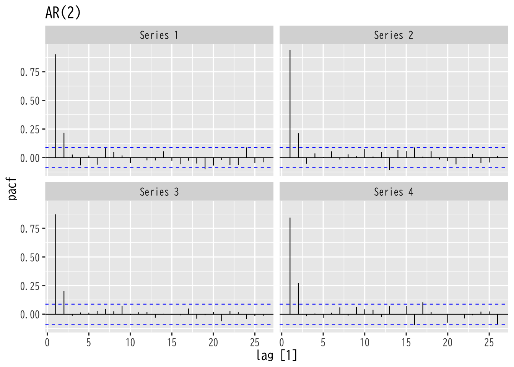
Figure 7: AR過程の偏自己相関
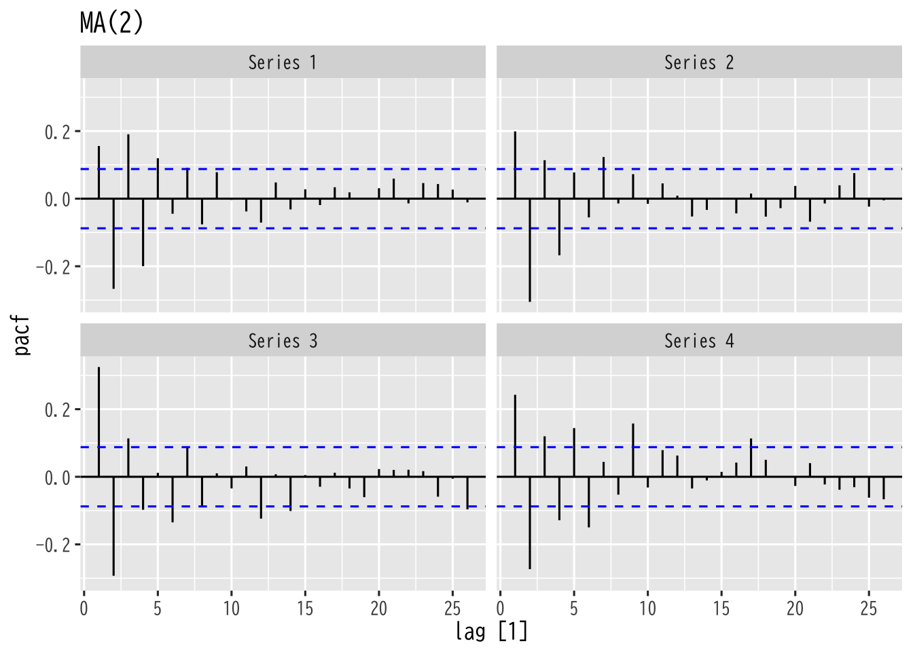
Figure 8: MA過程の偏自己相関
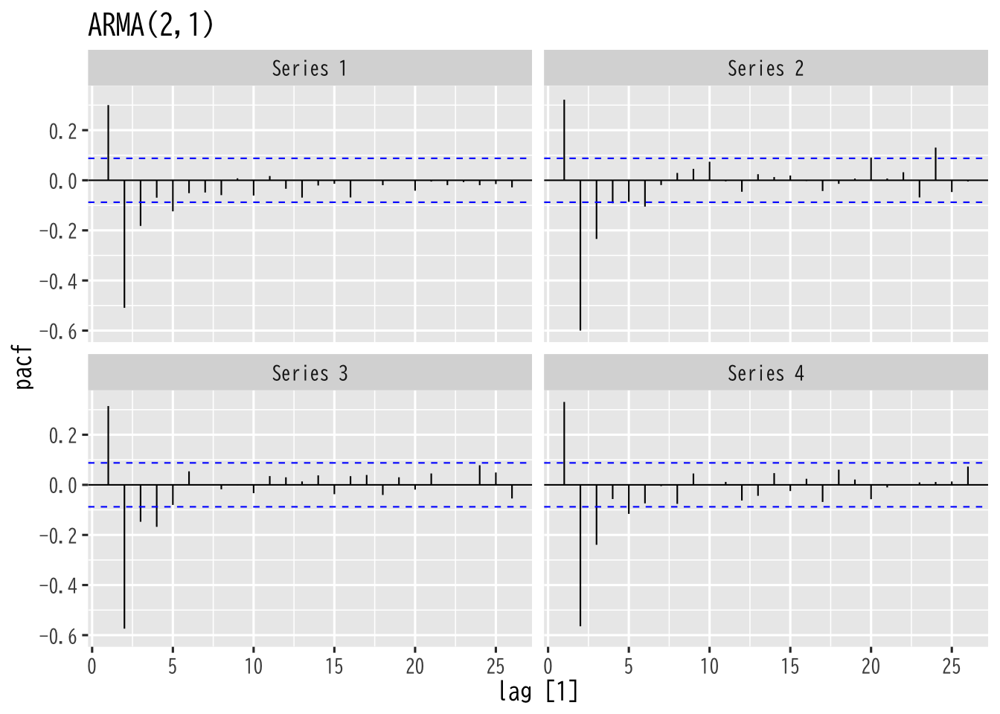
Figure 9: ARMA過程の偏自己相関
モデルの推定に関する補足
- ARMAモデルの推定方法は主に以下の3つ
- Yule-Walker方程式 (AR過程)
- 最小二乗
- 予測誤差の平方和の最小化
- 回帰と同じだが，従属系列のため多重共線性に注意
- 最尤推定
- WNの分布を仮定して同時尤度関数を設定
- 非線形最適化を行う
- 一般にモデルは近似なので，どの推定が良いかは問題による
非定常過程の変換
- 定常過程とみなせるように変換して分析
階差の利用
\begin{equation} X_{t}=X_{t-1}+\epsilon_{t} \quad\Rightarrow\quad Y_{t}=X_{t}-X_{t-1}=\epsilon_{t} \end{equation}- ランダムウォーク : 階差をとるとホワイトノイズ(定常過程)
- ARIMA過程 : 階差をとるとARMA過程になる確率過程
対数変換の利用
\begin{equation} X_{t}=(1+\epsilon_{t})X_{t-1} \quad\Rightarrow\quad Y_{t}=\log(X_{t})-\log(X_{t-1}) =\log(1+\epsilon_{t}) \simeq\epsilon_{t} \end{equation}- 対数変換と階差で微小な比率の変動を抽出
演習
問題
以下で定義されるMA(1)について問に答えなさい
\begin{equation} X_{t} = b_{1}\epsilon_{t-1}+\epsilon_{t}, \quad \epsilon_{t} \sim \mathrm{WN}(0,\sigma^2) \end{equation}- ラグ2までの自己共分散係数を求めなさい
- 自己相関係数とパラメタ\(b_{1}\)が満すべき方程式を求めなさい
解答例
平均0であることに注意して定義通り計算する
\begin{align} \gamma(0) &= \mathbb{E}[X_{t}X_{t}] = \mathbb{E}[(b_{1}\epsilon_{t-1}+\epsilon_{t})^{2}]\\ &= b_{1}^{2}\mathbb{E}[\epsilon_{t-1}^{2}] +2b_{1}\mathbb{E}[\epsilon_{t-1}\epsilon_{t}] +\mathbb{E}[\epsilon_{t}^{2}]\\ &= (b_{1}^{2}+1)\sigma^{2}\\ \gamma(1) &= \mathbb{E}[X_{t}X_{t+1}] = \mathbb{E}[(b_{1}\epsilon_{t-1}+\epsilon_{t})(b_{1}\epsilon_{t}+\epsilon_{t+1})]\\ &= b_{1}^{2}\mathbb{E}[\epsilon_{t-1}\epsilon_{t}] +b_{1}\mathbb{E}[\epsilon_{t-1}\epsilon_{t+1}] +b_{1}\mathbb{E}[\epsilon_{t}\epsilon_{t}] +\mathbb{E}[\epsilon_{t}\epsilon_{t+1}]\\ &= b_{1}\sigma^{2}\\ \gamma(2) &= \mathbb{E}[X_{t}X_{t+2}] = \mathbb{E}[(b_{1}\epsilon_{t-1}+\epsilon_{t})(b_{1}\epsilon_{t+1}+\epsilon_{t+2})]\\ &= b_{1}^{2}\mathbb{E}[\epsilon_{t-1}\epsilon_{t+1}] +b_{1}\mathbb{E}[\epsilon_{t-1}\epsilon_{t+2}] +b_{1}\mathbb{E}[\epsilon_{t}\epsilon_{t+1}] +\mathbb{E}[\epsilon_{t}\epsilon_{t+2}]\\ &= 0 \end{align}
ラグ3以降も自己共分散は0となることに注意する
\begin{align} \gamma(0) &= (b_{1}^{2}+1)\sigma^{2}\\ \gamma(1) &= b_{1}\sigma^{2} \end{align}\(\sigma^{2}\)を消去して以下が得られる
\begin{equation} \gamma(1)/\gamma(0) =\frac{b_{1}}{b_{1}^{2}+1} =\rho(1) \end{equation}\begin{equation} \rho(1)b_{1}^{2}-b_{1}+\rho(1)=0 \end{equation}\(\rho(1)\)の値によっては解が求められない場合もある
モデルによる予測
ARMAモデルによる予測
- 推定したモデルを用いて\(n\)期先を予測
- ARモデル : 観測時点までの観測値を用いて回帰
- MAモデル : 観測時点までのホワイトノイズで回帰
- ARMAモデル : 上記の複合
- いずれも \(n\)が大きいと不確定性が増大
- 階差による変換は累積(階差の逆変換)により推定
- 推定したノイズの不確定性にもとづき信頼区間を構成
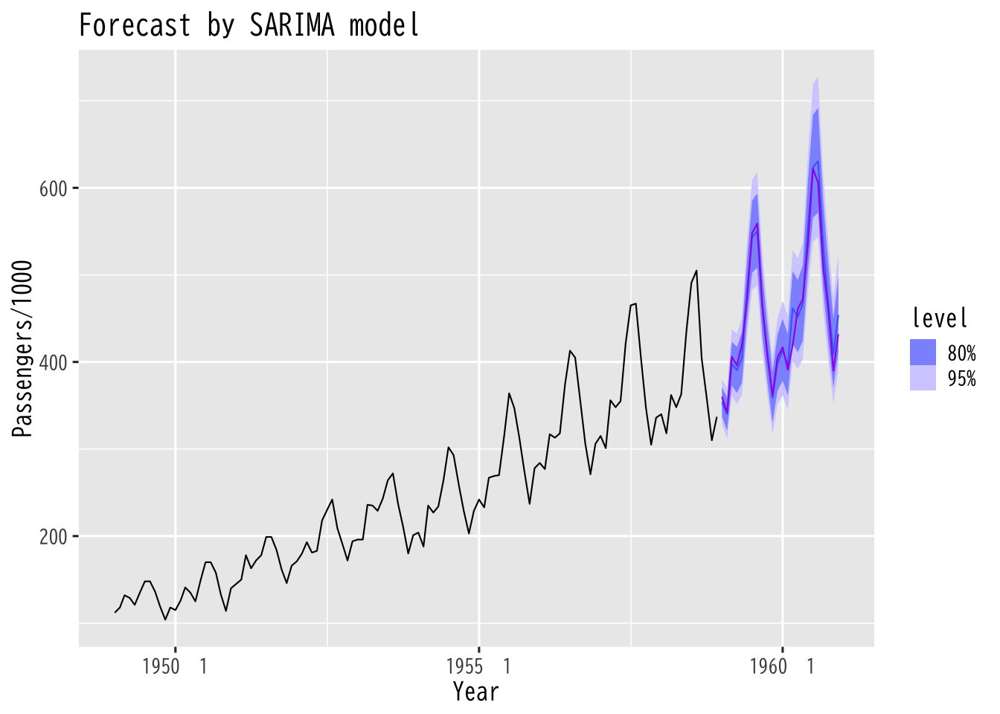
Figure 10: ARIMAモデル(階差ありARMA)による予測
分解モデルによる予測
トレンド成分+季節成分+ランダム成分への分解
\begin{equation} X_{t}=T_{t}+S_{t}+R_{t} \end{equation}あるいは
\begin{equation} X_{t}=T_{t}\times S_{t}\times R_{t}\qquad (\log X_{t}=\log T_{t} + \log S_{t} + \log R_{t}) \end{equation}- トレンド成分 : 時間の関数やランダムウォークなどを想定
- 季節成分 : 周期的な関数を想定
- ランダム成分 : ARMAモデルなどを想定
- 分解の考え方
- ランダム成分 : 適切な幅の移動平均が0
- 季節成分 : 1周期の平均が0
Holt-Winter の方法
指数平滑化を用いた加法的分解モデルによる予測
\begin{align} l_{t} &= \alpha (x_{t}-s_{t{-}m}) + (1-\alpha) (l_{t{-}1}+b_{t{-}1})\\ b_{t} &= \beta (l_{t}-l_{t{-}1}) + (1-\beta) b_{t{-}1}\\ s_{t} &= \gamma (x_{t}-l_{t}) + (1-\gamma) s_{t{-}m}\\ \hat{x}_{t{+}h|t} &= l_{t} + b_{t}\times h + s_{t{-}m{+}h} \end{align}- \(l_{t},b_{t}\)は時刻\(t\)における平均と傾きの推定値
- \(s_{t}\)は時刻\(t\)における季節成分，\(m\)は季節性の周期
- 時刻\(t,t{-}1\)における推定を平滑化して推定量を構成
- ETS (error-trend-seasonal) モデルの一つ
- 基本的な考え方は乗法的分解に拡張可能
- 拡張したのがETSモデルとも言える
- 状態空間モデルの特殊な場合とも考えられる
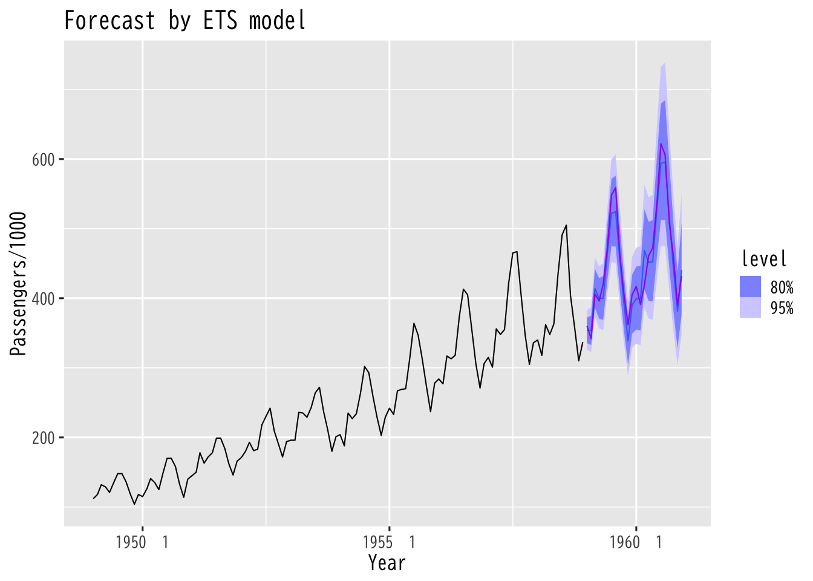
Figure 11: ETSモデル(expornential smoothing)による予測
解析事例
COVID-19 の感染者数の分析
- 厚生労働省の COVID-19 のデータ
- 陽性者数 (新規・累積)
- 重症者数 (推移・性別・年齢別)
- 死者数 (推移・性別・年齢別・累積)
- 入院治療等を要する者等推移
- 集団感染等発生状況
- 以下の解析で用いるデータ
- 日毎の全国・各都道府県の新規陽性者数 (感染者数) https://covid19.mhlw.go.jp/public/opendata/newly_confirmed_cases_daily.csv
感染者数の推移
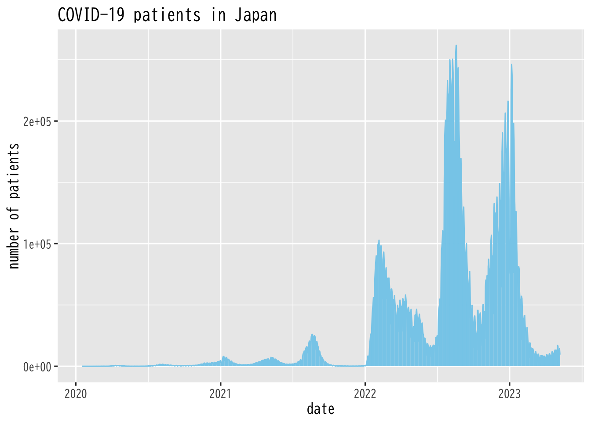
Figure 12: 全国の感染者数
第3波における感染者数の推移
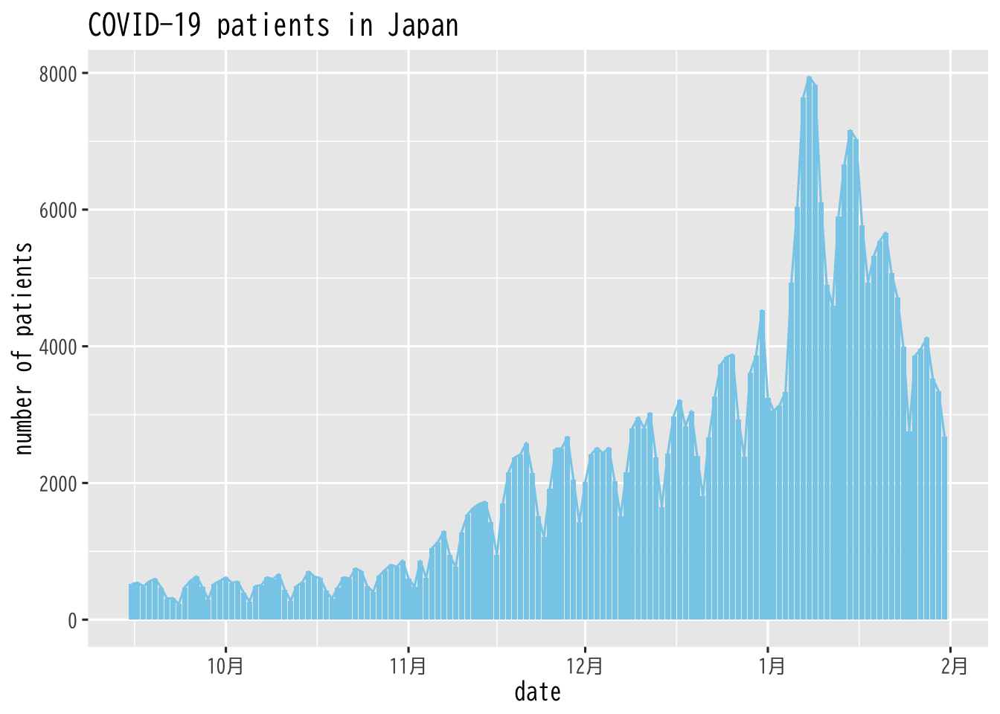
Figure 13: 第3波の感染者数
基礎分析 (分析対象 : 2020/9/15-11/30)
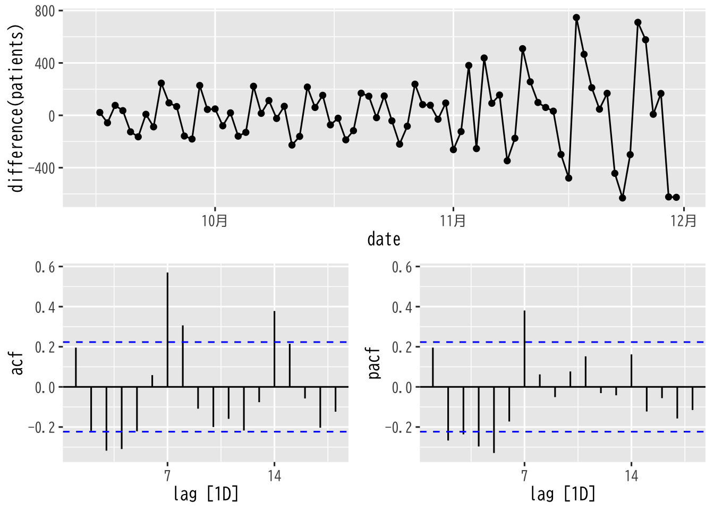
Figure 14: 時系列 (階差)
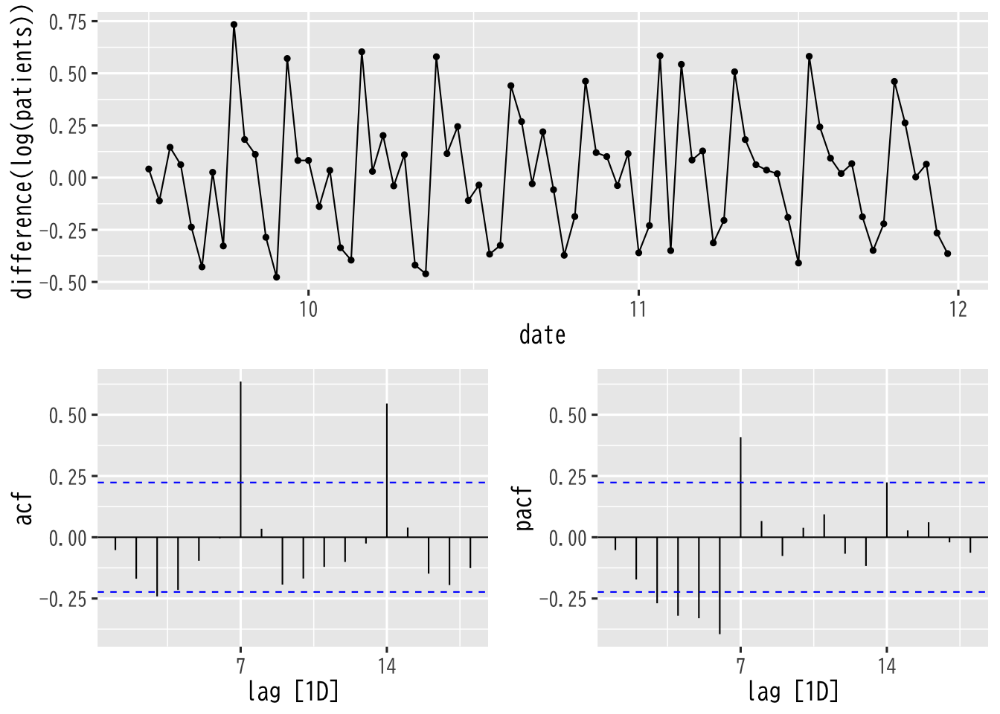
Figure 15: 時系列 (対数変換+階差)
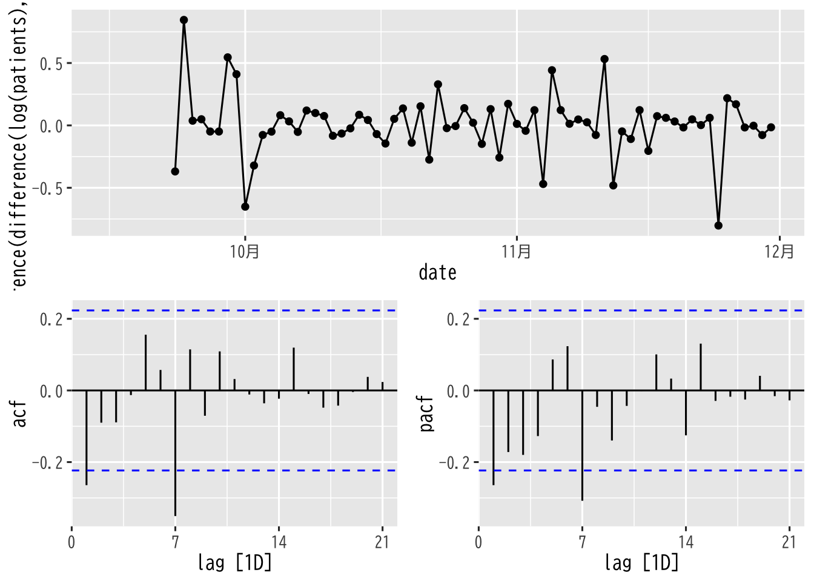
Figure 16: 時系列 (対数変換+階差+7日階差)
ARIMA モデルによる推定
- 推定された ARIMA モデル
Series: patients
Model: ARIMA(1,1,1)(2,0,0)[7]
Transformation: log(patients)
Coefficients:
ar1 ma1 sar1 sar2
0.4493 -0.8309 0.3709 0.4232
s.e. 0.1635 0.0981 0.1212 0.1353
sigma^2 estimated as 0.03811: log likelihood=15.04
AIC=-20.07 AICc=-19.21 BIC=-8.42
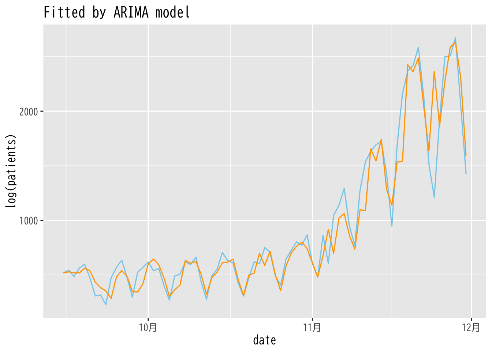
Figure 17: あてはめ値
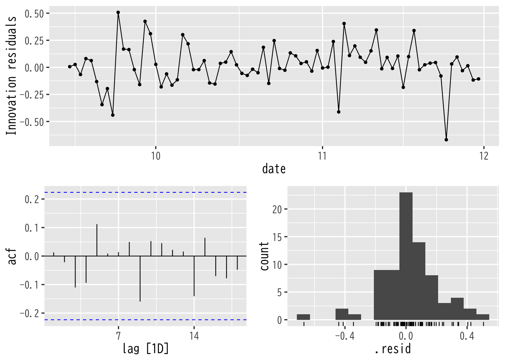
Figure 18: 診断プロット
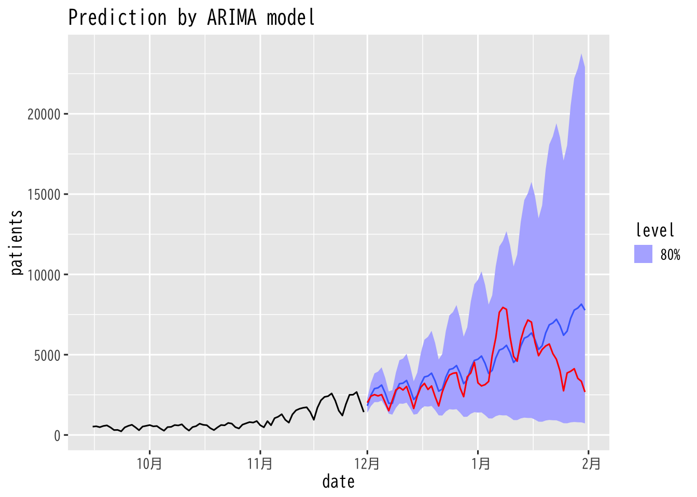
Figure 19: 予測値 (60日分，80%信頼区間)
まとめ
- 感染者数の推移は非定常なデータ
構造が時不変と考えられる区間を捉えれば
- 時系列の適切な変換 (指数的な増大のため対数変換)
- 基本的なARMAモデル (階差系列にARMAモデルを適用)
の組み合わせである程度の分析は可能